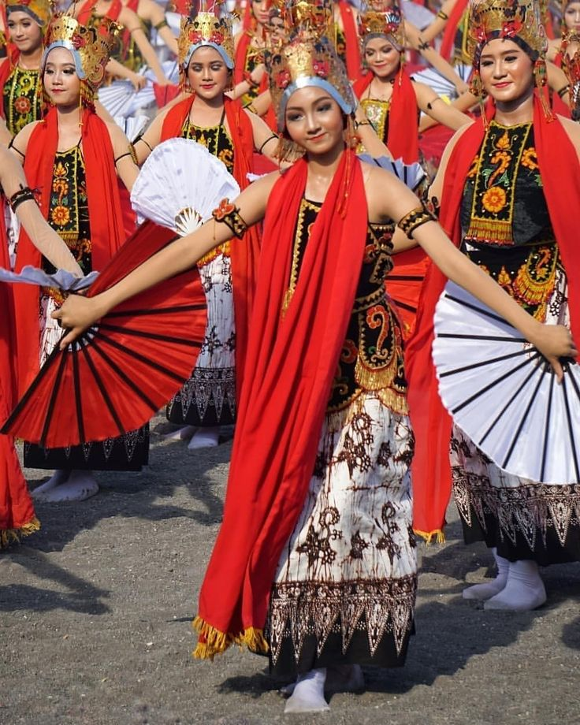
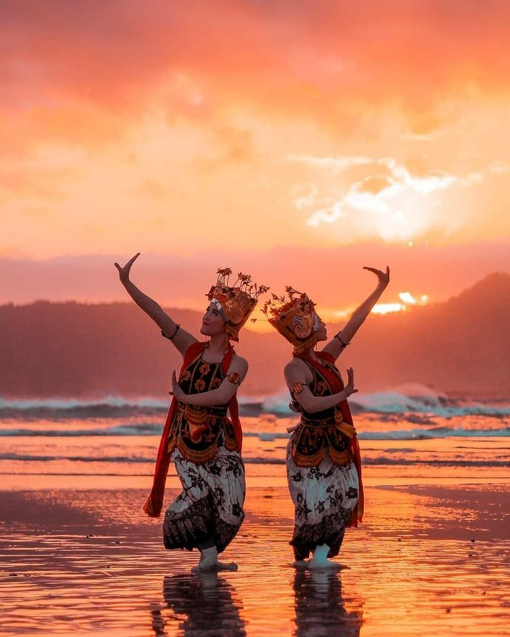
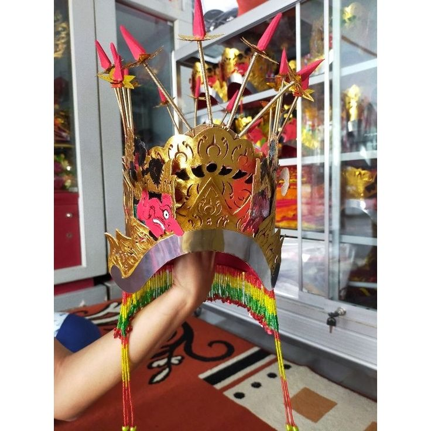

📜 Sejarah
Gandrung Banyuwangi adalah salah satu kesenian tari tradisional paling ikonik dari ujung timur Pulau Jawa. Secara harfiah, kata "Gandrung" berarti terpesona atau terpikat. Tarian ini lahir dari rahim budaya masyarakat suku Osing sebagai wujud rasa syukur, sekaligus bentuk penghormatan mendalam terhadap alam dan leluhur.
Menelusuri akar Gandrung membawa kita kembali ke masa runtuhnya Kerajaan Blambangan pasca-perang Puputan Bayu pada tahun 1771. Pada awalnya, penari Gandrung bukanlah perempuan, melainkan laki-laki muda (disebut Gandrung Marsan) yang berdandan menyerupai wanita. Mereka keliling dari desa ke desa di bawah pengawasan ketat kolonial VOC.
Di balik tabuhan musik, mereka sebenarnya bertindak sebagai intelijen atau mata-mata. Sambil menghibur, Gandrung Marsan menggalang persatuan, memetakan kekuatan musuh, dan membagikan logistik (seperti makanan dan beras) kepada para pejuang Blambangan yang bersembunyi di hutan.
Seiring situasi yang semakin aman dan pengaruh agama yang menguat, peran penari laki-laki mulai digantikan oleh penari perempuan. Penari Gandrung wanita pertama yang tercatat dalam sejarah adalah Semi, seorang anak perempuan yang sembuh dari penyakit parah pada tahun 1895, di mana ibunya memenuhi nazar agar Semi menjadi seorang penari Gandrung.
💭 Makna Filosofis
Rasa "terpesona" yang melekat pada nama Gandrung tidak hanya sekadar ketertarikan fisik, melainkan memiliki makna spiritual dan sosial yang mendalam:
🌾 Manifestasi Syukur kepada Dewi Sri
Gerakan dan ritual Gandrung merupakan perwujudan rasa cinta dan terima kasih masyarakat agraris Blambangan kepada Dewi Sri (Dewi Padi dan Kesuburan) atas hasil panen yang melimpah.
🤝 Simbol Keramahan Sosial
Tari ini mencerminkan karakter masyarakat Banyuwangi yang terbuka, hangat, egalitarian, dan sangat menghargai tamu yang berkunjung ke tanah mereka.
🎭 Prosesi Pertunjukan
Sebuah pertunjukan Gandrung yang autentik (biasanya dipentaskan semalam suntuk untuk acara khitanan, pernikahan, atau bersih desa) terbagi menjadi tiga babak utama yang tidak boleh tertukar:
» Jejer (Babak Pembuka)
Penari Gandrung tampil solo atau berkelompok, menyanyikan lagu-lagu bermakna sakral (seperti Padha Nonton) sambil menari dengan anggun untuk menyapa dan menyambut para tamu undangan.
» Paju atau Ngibing (Babak Interaktif)
Babak yang paling dinamis. Penari melemparkan selendang (sampur) kepada para tamu atau penonton pria sebagai undangan untuk maju ke area panggung dan menari bersama secara bergantian.
» Seblang Subuh (Babak Penutup)
Digelar menjelang fajar. Ritme musik melambat dan suasana berubah menjadi magis serta kontemplatif. Penari akan menyanyikan lagu-lagu bernuansa religius dan nasihat kehidupan sebagai penutup sekaligus doa keselamatan.
✨ Fakta Menarik
Gandrung Sewu: Rekor Kolosal Tahunan
Setiap tahun, Banyuwangi menggelar festival kolosal bernama Gandrung Sewu. Lebih dari 1.000 penari Gandrung berkumpul dan menari bersama secara sinkron dengan latar belakang Selat Bali. Festival ini sudah masuk dalam kalender pariwisata nasional.
Mahkota "Omprog" yang Unik
Mahkota khas penari Gandrung disebut Omprog. Ornamennya menyerupai wajah raksasa (Batara Kala) yang melambangkan perlindungan dari marabahaya, serta dihiasi kaca cermin kecil yang bermakna mawas diri atau berkaca pada perbuatan sendiri.
Sinden Sekaligus Penari
Berbeda dengan tarian Jawa pada umumnya di mana penyanyi (sinden) duduk terpisah di dekat gamelan, penari Gandrung bertindak ganda. Mereka harus memiliki stamina luar biasa karena wajib bernyanyi sambil terus bergerak lincah sepanjang malam.
Warisan Budaya Takbenda
Keunikan dan nilai historis yang kuat membuat Gandrung Banyuwangi resmi ditetapkan sebagai Warisan Budaya Takbenda (WBTb) Indonesia oleh Kementerian Pendidikan dan Kebudayaan.
📸 Galeri



